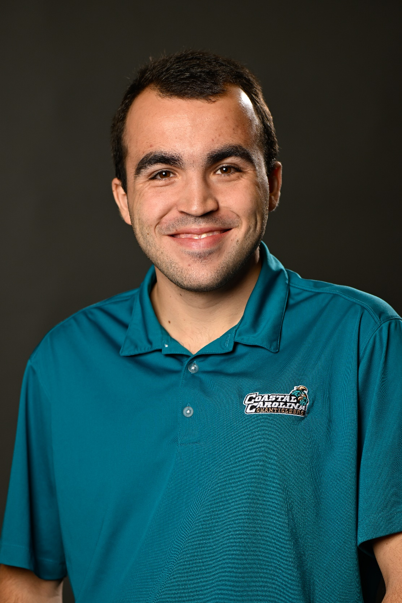
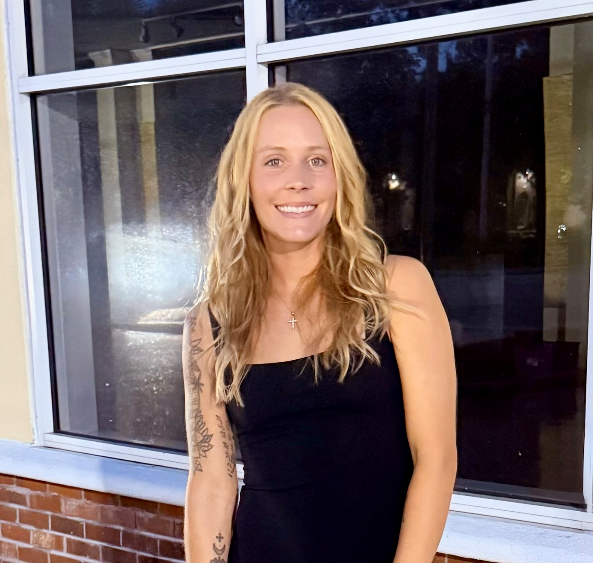

Dan Huang
Research Group
Department of Engineering
Research Team
Faculty • Students • Collaborators • Research PartnersMeet the talented individuals who make up our research group, working together to advance concrete science and coastal infrastructure resilience through innovative research and collaboration.

Principal Investigator
Dan Huang
Assistant Professor
Principal Investigator leading research in sustainable concrete materials, nanomaterials, and coastal infrastructure resilience.
Specializing in supplementary cementitious materials and their applications in marine environments.
Research Interests: Concrete durability, nanomaterials, coastal infrastructure, supplementary cementitious materials
Undergraduate Researchers
Jessica
Undergraduate Research Assistant
Jessica is a senior studying sustainability and coastal resilience with a minor in engineering science. She is passionate about helping the environment thrive and promoting sustainable lifestyles. When she's not at school, Jessica enjoys taking her dogs on walks, reading a book and trying new coffee shops.
Research Focus: Sustainability, coastal resilience, environmental protection

Joseph Paladino
Undergraduate Research Assistant
Joseph Paladino is a senior studying Civil Engineering with a concentration in Materials Engineering at Coastal Carolina University. He is from Murrells Inlet, South Carolina, originally from Oakdale, New York. One of his long-term goals is to become a Professional Engineer (PE). He chose a design-focused path because, as a kid, he loved building with Legos, and that early passion for creating structures grew into a career interest in engineering design and materials.
Research Focus: Civil engineering, materials engineering, structural design
Jake Winnall
Undergraduate Research Assistant
Jake Winnall is a junior studying Civil Engineering. His hobbies are hiking, working out, bike riding, and playing video games.
Research Focus: Civil engineering, structural analysis
Joseph Hanson
Undergraduate Research Assistant
Joseph Hanson is a Junior studying Engineering with a concentration in mechanical engineering. Joseph is on the Coastal Carolina football team and likes to spend time with family and his dogs.
Research Focus: Mechanical engineering, materials science

Racheal Johnson
Undergraduate Research Assistant
Racheal Johnson is a senior at Coastal Carolina University. Her major is engineering science with a civil concentration.
Research Focus: Engineering science, civil engineering
Join Our Team
We are always looking for talented and motivated students to join our research group. If you are interested in concrete science, nanomaterials, or coastal infrastructure research, please don't hesitate to reach out!